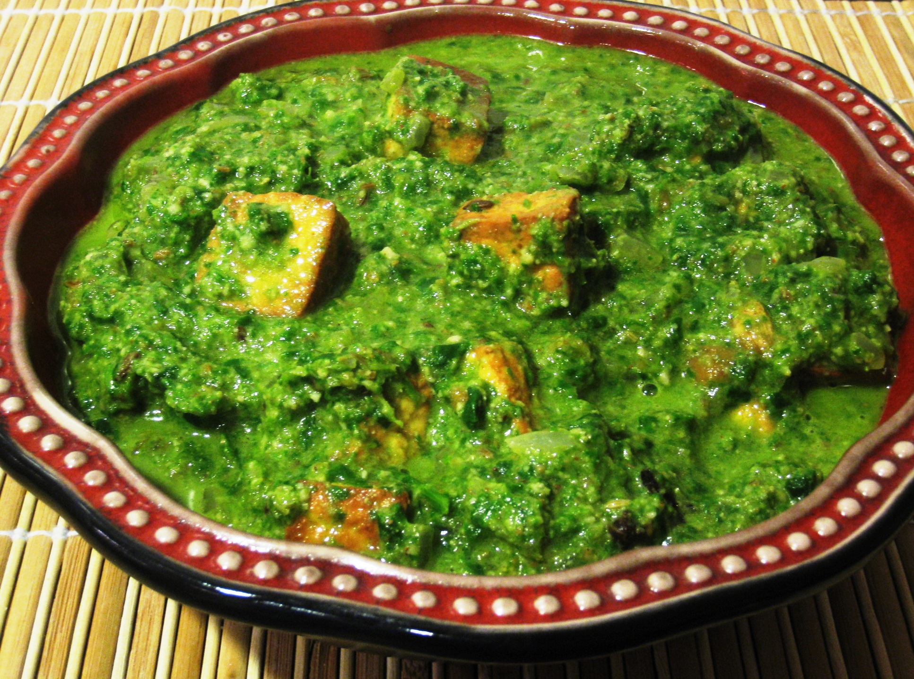

Palak Paneer
Ingredients
- 2 large bunches fresh spinach leaves (palak)
- 250 grams cottage cheese (paneer)
- 1-2 green chillies
- 1 tablespoon oil
- 1/2 teaspoon cumin seeds
- 1 tablespoon chopped garlic
- Salt to taste
- A few drops lemon juice
- 1 tablespoon fresh cream + for drizzling
Method
- Blanch spinach leaves in sufficient water for 30-40 seconds. Remove from
- heat and refresh in ice cold water.
- Squeeze out the excess water and grind into a fine puree with green chillies.
- Heat oil in a non-stick pan. Add cumin seeds and saut� till it changes colour.
- Add garlic, mix and saut� well. Add prepared spinach puree and little water and mix well.
- Cut cottage cheese into large cubes.
- Add salt, lemon juice and cottage cheese cubes, mix lightly and cook for 2-3minutes.
- Add cream and mix well. Switch off heat.
- Drizzle cream on top and serve hot.